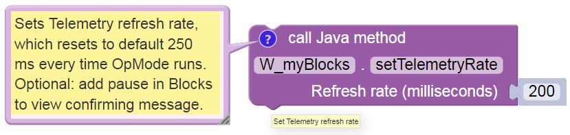
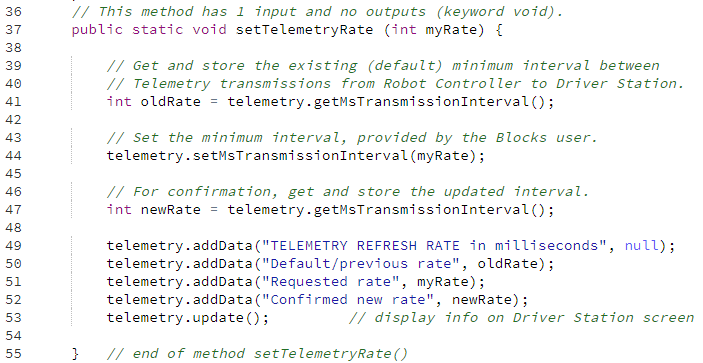

Example: Modify Telemetry Settings
Telemetry messages are sent from the Robot Controller to the Driver Station up to four time per second, by default. This maximum refresh rate can be changed with Android Studio or OnBot Java, but not with regular Blocks. Now a myBlock can provide that capability too!
This simple example allows a Blocks user to change the standard time interval from 250 milliseconds to any other interval.
A lower time interval can allow faster update of sensor or encoder data. A higher interval can ease the RC-DS communication bandwidth load.
Here’s the Java code for the method only:
Note
This tutorial intends for you to manually type the Java code above. If you require pre-typed text of this example, click below. The linked copy includes the usual class declaration and package/import statements.
Example Code
/*
v01 dated 12/20/2020
This FTC myBlocks example allows the Blocks user to modify the Telemetry
refresh rate from the standard 4 cycles per second (4 Hz or 250 ms interval).
A lower time interval can allow faster update of sensor or encoder data.
A higher interval can ease the RC-DS communication bandwidth load.
This feature is not available with regular Blocks, in FTC app version 6.1.
For more controls, click Telemetry in the left side column here:
https://first-tech-challenge.github.io/FtcRobotController/6.0.1/RobotCore/index.html
The top-level API Documentation for the FTC SDK is here:
https://first-tech-challenge.github.io/FtcRobotController/
*/
package org.firstinspires.ftc.teamcode;
import org.firstinspires.ftc.robotcore.external.BlocksOpModeCompanion;
import org.firstinspires.ftc.robotcore.external.ExportToBlocks;
// Don't need to import Telemetry class, provided with BlocksOpModeCompanion.
public class W_myBlocks extends BlocksOpModeCompanion {
// This Annotation must appear immediately before any myBlock method.
// Optional to add a comment, tooltip, and/or parameterLabels.
// Comment must be a single text line, concatenation (+) allowed.
@ExportToBlocks (
comment = "Sets Telemetry refresh rate, which resets to default 250 ms " +
"every time OpMode runs. Optional: add pause in Blocks to view " +
"confirming message.",
tooltip = "Set Telemetry refresh rate",
parameterLabels = {"Refresh rate (milliseconds)"}
)
// This method has 1 input and no outputs (keyword void).
public static void setTelemetryRate (int myRate) {
// Get and store the existing (default) minimum interval between
// Telemetry transmissions from Robot Controller to Driver Station.
int oldRate = telemetry.getMsTransmissionInterval();
// Set the minimum interval, provided by the Blocks user.
telemetry.setMsTransmissionInterval(myRate);
// For confirmation, get and store the updated interval.
int newRate = telemetry.getMsTransmissionInterval();
telemetry.addData("TELEMETRY REFRESH RATE in milliseconds", null);
telemetry.addData("Default/previous rate", oldRate);
telemetry.addData("Requested rate", myRate);
telemetry.addData("Confirmed new rate", newRate);
telemetry.update(); // display info on Driver Station screen
} // end of method setTelemetryRate()
} // end of class W_myBlocks
Want to verify this actually works? Another, slightly more advanced myBlock allows measuring the time between Telemetry updates; it’s posted below. That myBlock can be used in a Blocks program like the one attatched below; download the raw .blk file and click the Upload Op Mode button at the main Blocks menu. Read all comments and instructions.
Example Code
/*
v01 dated 12/20/2020
This FTC myBlocks example allows the Blocks user to modify the Telemetry
refresh rate from the standard 4 cycles per second (4 Hz or 250 ms interval).
A lower time interval can allow faster update of sensor or encoder data.
A higher interval can ease the RC-DS communication bandwidth load.
This feature is not available with regular Blocks, in FTC app version 6.1.
For more controls, click Telemetry in the left side column here:
https://first-tech-challenge.github.io/FtcRobotController/6.0.1/RobotCore/index.html
The top-level API Documentation for the FTC SDK is here:
https://first-tech-challenge.github.io/FtcRobotController/
v02 dated 12/20/2020
Add myBlock "telemetryAction" to allow cycle testing.
*/
package org.firstinspires.ftc.teamcode;
import org.firstinspires.ftc.robotcore.external.BlocksOpModeCompanion;
import org.firstinspires.ftc.robotcore.external.ExportToBlocks;
public class W_myBlocks_Telemetry_v02 extends BlocksOpModeCompanion {
// This Annotation must appear immediately before any myBlock method.
// Optional to add a comment, tooltip, and/or parameterLabels.
// Comment must be a single text line, concatenation (+) allowed.
@ExportToBlocks (
comment = "Sets Telemetry refresh rate or interval, which resets to " +
"default 250 ms every time OpMode runs. Optional: add pause in Blocks " +
"to view confirming message.",
tooltip = "Set Telemetry refresh interval",
parameterLabels = {"Refresh interval (milliseconds)"}
)
// This myBlock method has 1 input and no outputs (keyword void).
public static void setTelemetryRate (int myRate) {
// Get and store the existing (default) minimum interval between
// Telemetry transmissions from Robot Controller to Driver Station.
int oldRate = telemetry.getMsTransmissionInterval();
// Set the minimum interval, provided by the Blocks user.
telemetry.setMsTransmissionInterval(myRate);
// For confirmation, get and store the updated interval.
int newRate = telemetry.getMsTransmissionInterval();
telemetry.addData("TELEMETRY REFRESH RATE in milliseconds", null);
telemetry.addData("Default/previous rate", oldRate);
telemetry.addData("Requested rate", myRate);
telemetry.addData("Confirmed new rate", newRate);
telemetry.update(); // display info on Driver Station screen
} // end of method setTelemetryRate()
// initialize toggle indicating end of current Telemetry interval
static boolean readyToBroadcast = false;
@ExportToBlocks (
comment = "At each scheduled Telemetry update, return value 1 " +
"to increment counter. Otherwise return 0.",
tooltip = "Action before Telemetry update"
)
// This myBlock method has no inputs and one output of type int (integer).
public static int telemetryAction() {
// Create a named list of actions to be run when specified.
Runnable myActions = new Runnable() {
@Override
public void run() {
// one action here, could be a list
readyToBroadcast = true; // toggle: end of interval
}
};
// The method addAction() runs the indicated action list only if
// the Telemetry interval (of the Blocks OpMode) has elapsed.
telemetry.addAction (myActions);
if (readyToBroadcast) { // Telemetry interval has elapsed
readyToBroadcast = false; // reset the interval toggle
return 1; // send a 1 for cycle counter
}
else return 0; // send 0 if interval not elapsed
} // end of method telemetryAction()
} // end of class W_myBlocks_Telemetry_v02